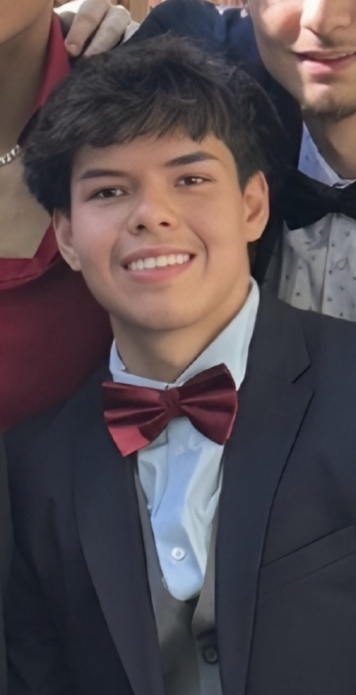

Mechanical Engineering Student
Lucas Narvaez
The George Washington University
I am a Mechanical Engineering student with interests in design, construction, CAD, blueprint interpretation, and hands-on problem solving. I enjoy building technical experience through real projects, practical work, and engineering coursework.

About Me
My background includes project observation on active construction work, community grounds maintenance, CAD-related technical work, and team-based engineering class projects.
I am focused on continuing to grow in mechanical design, engineering communication, and practical problem solving while preparing for future internships and professional opportunities.
Highlights
- Mechanical Engineering student at GWU
- Blueprint interpretation and CAD exposure
- Construction and project-site observation
- Hands-on engineering class project work
- Strong teamwork, communication, and problem-solving skills
Quick Overview
Projects
Engineering class work, construction-related observation, and CAD drawing work.
See Projects